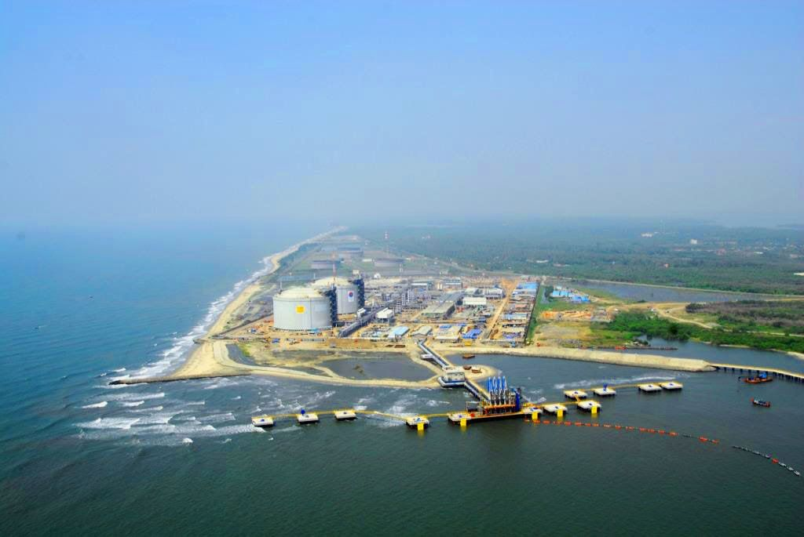
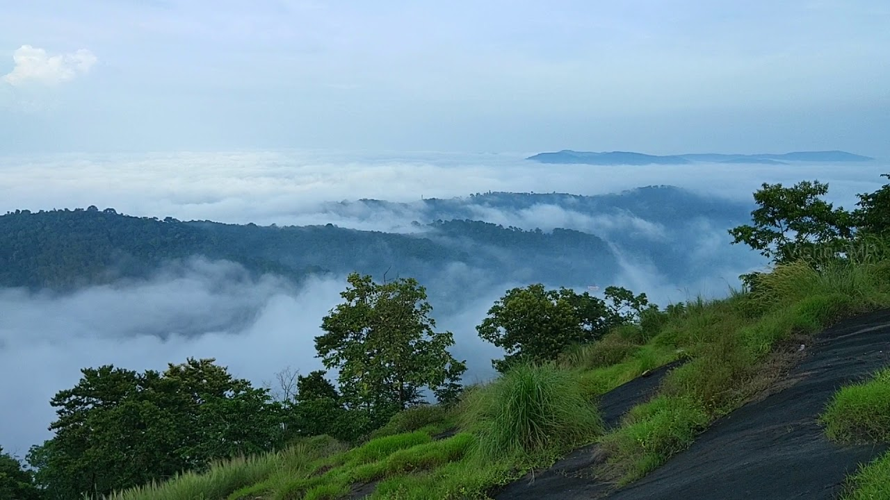
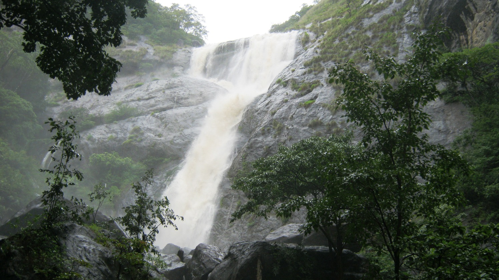
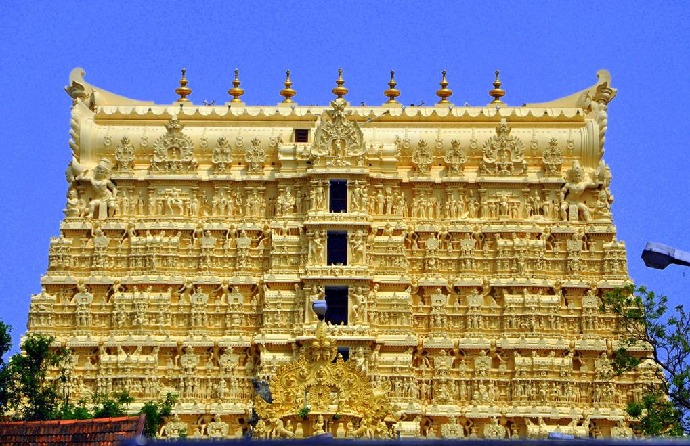

KASARAGOD
Kasaragod is the northernmost district of Kerala and is also known as Saptha Bhasha Sangama Bhoomi (The land of seven languages) as seven languages namely, Malayalam, Tulu, Kannada, Marathi,
Konkani, Beary, and Urdu are spoken, unlike the other districts of Kerala.
The district is situated on the rich biodiversity of Western Ghats. It was a part of the Kannur district of Kerala until 24 May 1984. The district is bounded by Dakshina Kannada district
to the north, Western Ghats to the northeast, Kodagu district to the southeast, Kannur district to the south, and Arabian Sea to the west. Kasaragod district has
the maximum number of rivers in Kerala.
Ananthapuram Temple

Ananthapadmanabhaswamy Temple or Anantha Lake Temple is a Hindu temple built in the middle of a lake
in the little village of Ananthapura, around 6 km from the town of Kumbla in Manjeshwaram Taluk of Kasaragod
District of Kerala, South India. This is the only lake temple in Kerala and is believed to be the original seat (Moolasthanam) of Ananthapadmanabha Swami
(Padmanabhaswamy temple) Thiruvananthapuram. Legend has it that this is the original site where
Ananthapadmanabha settled down.The view of the hillocks from the temple is extremely famous. Babia, the vegetarian crocodile and temple guardian, is popular among visitors. The drive to the temple in itself is extremely peaceful and calming.
Malik Dinar Mosque

The historic Malik Deenar Juma Masjid built in the typical Kerala style is believed to have been founded by Malik Ibn Deenar. The mosque, Juma Masjid, which is one of the best kept and most attractive in the district, is located at Thalankara.
Malik bin Deenar or Malik Ibn Dinar was a Tabi‘in who is famous for being the first to bring Islam to India. In 624 AD, Malik Ibn Deenar and 12 of his trade associates landed in Kerala. Their mission was not just trade but to propagate Islam in other parts of the world. The delegation consisted of Sharaf Ibn Malik, his brother Malik Ibn Deenar and his nephew Malik Ibn Habeeb Ibn Malik. The mission reached at Kanhirakode (now Kasaragod). Their distinct way of trade and the propagation of Islam soon attracted the attention of the then ruler Cheraman Perumal. On enquiry, Malik Bin Deenar and his comrades related the reason for their honest trade practices to be their recent conversion to Islam.
Bekal Fort

Around 16 km to the south of northernmost district in Kerala, Kasaragod, lies the massive Bekal Fort. It is among the biggest forts in Kerala and has been impeccably maintained throughout the years. It rises to 130 feet above sea level and is situated on a headland spanning 35km. Much effort has been put to develop a beautiful beach here called the Bekal Fort Beach. People flock to these spots in great numbers. Situated comfortably on steep hills by the sea, the fort provides for an imposing view from the beach. Built using laterite slabs and with a polygonal shape, it is amongst the most visited sites in Kerala.
KANNUR
Kannur is a coastal city in the south Indian state of Kerala. It was once an ancient trading port. Enduring monuments such as 16th-century St. Angelo Fort, once occupied by European colonial forces, show the city’s significant role in the spice trade. Housed in a former palace, the Arakkal Museum highlights Kerala's one Muslim royal family. The palm-fringed sands of Payyambalam Beach run along Kannur’s western shore.
Kannur LightHouse
The Kannur Lighthouse is located near the Payyambalam Beach, a few kilometers from Kannur town, in Kerala state, south India. It is adjacent to the Sea View Park and the Government Guest House. The lighthouse is still active and overlooks the Arabian Sea.[2]
Cannanore is the old English name for the town named Kannur. The lighthouse at Kannur is still often referred to as the Cannanore lighthouse.Today, the light uses modern PRB-42 equipment with 6 volt, 30 watt Type 'C' sealed beam lamps, supplied by Messers J. Stone India, of Calcutta. The GI lantern house installed at the station is 2.4 meters in diameter and was fabricated at Cochin. The new lighthouse was commissioned into service on 25 July 1976.
Indian Naval Academy
The Indian Naval Academy (INA or INA Ezhimala) is the defence service training establishment for officer cadre of the Indian Naval Service and the Indian Coast Guard, located in Ezhimala, Kannur district, Kerala. Situated between Ezhimala hill and the Kavvayi backwaters, INA has a 7 kilometre beach front on the Arabian Sea. It conducts basic training for all officers inducted into the Indian Navy and Indian Coast Guard.[1] It is Asia's largest, and the world's third-largest, naval academy.[2][3][4]
The Naval Academy (NAVAC) was established in May 1969, while its Ezhimala campus was inaugurated on 8 January 2009 and the name changed to Indian Naval Academy. It shares the 2,452 acre (9.92 km2) site with the naval base depot, INS Zamorin, and the naval hospital, INHS Navjivani.
St. Angelo Fort (Kannur Fort)
Built by the first Portuguese Viceroy in India, Don Francesco de Almeida (1505), St. Angelo’s Fort is among the most historic sites in Kannur. This massive triangular laterite structure is flanked by gigantic bastions that make for an imposing sight. It changed hands between the Dutch and eventually the British, who would remodel and reequip it into their primary military stronghold in Malabar.
Mopilla Bay and Dharamadam Island are among the primary attractions here. Mopilla Bay is a natural harbour and the fort offers a wonderful view of it along with a sea wall projecting from the fort separating the rough sea and inland water. Dharamadam Island, barely 5 acres in area, is 100 m from the mainland and a favourite haunt of tourists. People come to the fort for relaxing strolls and just a brilliant view of the Arabian Sea.
KOZHIKODE
Kozhikode, also known in English as Calicut, is an Indian city and the second-largest metropolitan city in the State of Kerala. It is also the 19th largest in the country with a population of two million according to the 2011 census.Kozhikode is classified as a Tier 2 city by the Government of India.
Kozhikode Beach

Kozhikode will always have a special place in the history of Kerala as it is here that Vasco-da-Gama first landed and the legendarySpice Route came into existence. This region still has a historic charm to it. Kozhikode Beach is the personification of the numerous characteristics that make Kozhikode so unique.
People flock in large numbers to view the sunset from the beach. One gets a fresh supply of seafood in the shacks that surround the place. Kallumekaya (mussels) is a local favourite. A walk to Dolphins Point at dawn ensures a meeting with playful dolphins. You are also greeted by a majestic lighthouse and two piers opening into the sea. Both have been here for over a hundred years. Children flock to Lions Park and the nearby marine water aquarium which is open on all days from 08:00 hrs to 20:00 hrs.
Pazhassiraja Archaeological Museum
Pazhassi Raja Archaeological Museum is a museum and art gallery in Kozhikode, Kerala. The museum has a rich collection of historical artifacts from 1000 BC to 200 AD.The museum has exhibits from the megalithic age and the Indus Valley Civilization. The exhibits include ancient pottery, toys, stone and other metal sculptures. Coins, Models of temples, Burial urns and umbrella stones (tomb stones of rulers) are part of the museums's collection. The museum also has a collection of war weapons used by British soldiers and the official caps of British and French soldiers.
The special collections of the museum include the Panchaloha idols and stone statues described as ‘War heroes'.
Kadalundi Bird Sanctuary

The Kadalundi Bird Sanctuary lies in kadalundi Grama Panchayat of Kozhiode district in Kerala, India. It spreads over a cluster of islands where the Kadalundipuzha River flows into the Arabian Sea. The Sanctuary hill is around 200 m above sea level. it is19 km from Kozhikode city centre.Over a hundred species of native birds have been recorded in the sanctuary, including about 60 species of migratory birds which visit seasonally; these include terns, gulls, herons, sandpipers and cormorants. Notable species are whimbrels and brahminy kites. The sanctuary is well known for a wide variety of fish, mussels and crabs.Some species of snakes, cobras, vipers and kraits also live here.
WAYANAD
Wayanad is a rural district in Kerala state, southwest India. In the east, the Wayanad Wildlife Sanctuary is a lush, forested region with areas of high altitude, home to animals including Asiatic elephants, tigers, leopards and egrets. In the Ambukuthi Hills to the south, Edakkal Caves contain ancient petroglyphs, some dating back to the Neolithic age.
Banasura Sagar Dam

Lying in the lap of the Banasura hills in the Wayanad district is the picturesque Banasura Sagar dam. Banasura Dam is the largest earthen dam in the country and the second-largest in Asia. The view of the sprawling reservoir from the top of the dam is breathtaking. Adventures like speed boating are readily available, and a trek up to the Banasura Peak is filled with streams, diverse flora, fauna, lush tropical green and majestic waterfalls. An earthen dam, also known as an embankment dam is created by placing mounds of clay, sand, rock or soil. The view of Banasura Lake from the top of the hill is mesmerising.
Wayanad Wildlife Sanctuary

Wayanad Wildlife Sanctuary is the second largest wildlife sanctuary in Kerala and comprises of rare as well as endangered species of both flora and fauna. It is surrounded by the protected areas of Mudumalai in Tamil Nadu as well as Nagarhole and Bandipur in Karnataka. Founded in the year 1973, the wildlife sanctuary is an integral part of the Nilgiri Biosphere Reserve which was the first biosphere out of the 14 present in India. The sanctuary is spread over an area of 345 square km and comprises of two parts namely Upper Wayanad and Lower Wayanad. Eucalyptus, as well as bamboo trees, are grown in the region.
Edakkal Cave

Famous for its exquisite rock and wall carvings, this pre-historic Edakkal Caves measures 96 ft long and 22 ft wide. You need to trek for one and half hour to hit the cave entrance, and another 45 minutes to reach the mouth of the cave. Boating cost: Pedal boat (Rs 30/2 people, Rs 50/4 people), Row boat (Rs 50/4 people) and Kayaking (Rs 100/30 minutes)
MALAPPURAM
Bounded by the Nilgiris hills on the east and the Arabian Sea on the west, the district of Malappuram literally the land atop the hills, is remarkable for its unique natural beauty. Perched among the undulating hills and the rivers that flow to reach the coconut-fringed seacoast, the land conceals a unique and eventful history.
Bharathapuzha River
Flowing along a stretch of 209 km, Bharathapuzha River is also called River Nila. It is the second longest river in Kerala and provides shelter to 11 reservoirs with Malampuzha dam being the largest.
Several famous Hindu temples like Thiruvilwamala Sree Rama Temple, Thirunavaya Navamukunda Temple, Chamravattam Ayyappa Temple and Panniyur Sree Varahamurthy temple lie on its bank. This sacred river is believed to bestow salvation to those who are cremated on its banks, and accordingly sons pay homage to their fathers by performing the "Pithru Tharpanam" ritual on the Karkidaka Vavu day.
Nilambur Teak Museum
Nilambur is famous for their teak produce, which is a kind of tree used for woodwork and is easily available throughout the country. Kerala, however, is one of the biggest providers of teak in the country, and this museum in the Nilambur district is entirely dedicated to the history of the wood.
Not just that, this two-storeyed building is the first museum of its kind. The exhibits and artifacts included in the museum display extensive information on the use of of teak, with a number of articles made from the wood.
Keraladeshpuram Temple
Dedicated o Lord Vishnu, Keraladeshpuram Temple is situated around 3 km off Tanur. The temple is believed to be one of the oldest Hindu temples in Kerala. Legend has it that St. Francis Xavier visited the temple in 1546 AD.
The temple was later pillaged by Tippu Sultan and was rebuilt recently.
PALAKKAD
Palakkad is one of the fourteen districts of Kerala and has no coastal line. The district opens the state to the rest of the country through the Palakkad Gap with a width of 32 to 40 Kms. Its geographical position, historical background, educational status, tourism hot-spots and above all, the development activities that are carried out, are wide and varied. The district is one of the main granaries of Kerala and its economy is primarily agricultural. The district is also the land of Palmyrahs.
Parambikulam Tiger Reserve
Parambikulam Tiger Reserve and Wildlife Sanctuary, located in the Palakkad district of Kerala, is best known for its constant efforts to preserve the dwindling tiger population. Surrounding hills and river along with flora and fauna make it the perfect place for a trek and safari.
The Parambikulam Tiger Reserve is the most protected ecological terrain of the Western Ghats. Endowed with peninsular vegetation and wildlife, this destination has minimum human interference. Some of the most prized animals found here include lion-tailed macaques, Bengal tigers, Indian leopards, wild boars, sloths, king cobra, Travancore kukri snake, and the Western Ghats flying lizard among others. Flora includes teak, sandalwood, neem and rosewood trees.
This sanctuary is also home to four different indigenous tribes- Kadar, Malasar, Muduvar and Mala Malasar.
Silent Valley National Park

The Silent Valley National Park, with its lush green forests and beautiful views of the rich flora and fauna, is a popular destination for nature as well as wildlife lovers all across the globe. Spread across an area of 89 square kilometres, the Silent Valley National Park is located in the Kundali Hills of the Western Ghats in Kerala in southern India. With its long, detailed history and the unique status of a rainforest, this national park is indeed a sight to visit. The well-planned Safari and the beautiful stop-overs around the park only make a trip to
this part of Kerala more worthwhile.
Seethargundu Viewpoint
Seethargundu Viewpoint is a famous point in the region. It is located on a cliff and offers a stunning view of the surroundings making it a perfect attraction for nature lovers and photographers. The dense forests all around the point are
home to monkeys and other wild animals which one can spot, if lucky.
Seethargundu waterfall runs about 100ft, which gives a glorious experience.This location gives a wide view of stone queries and paddy fields spread close to resembling a green blanket. Seethargundu estate
is the one of the best organic farm cultivating tea and coffee.
THRISSUR
Thrissur is known as the cultural capital of Kerala, and the land of Poorams. Thrissur is a revenue district of Kerala situated in the central part of that state. Spanning an area of about 3,032 km2, Thrissur district is home to over 10% of Kerala’s population. Thrissur district is bordered by the districts of Palakkad and Malappuram to the north, and the districts of Ernakulam and Idukki to the south. The Arabian Sea lies to the west and Western Ghats stretches towards the east. It is situated in southwestern India (10.52°N 76.21°E) and is in the central part of Kerala. According to the 2011 census Thrissur district has a population of 3,110,327. This gives it a ranking of 113th in India (out of a total of 640). The district has a population density of 1,026 inhabitants per square kilomet re (2,660/sq mi) . Its population growth rate over the decade 2001–2011 was 4.58%. Thrissur has a sex ratio of 1109 females for every 1000 males, and a literacy rate of 95.32%.
Vadakkunnathan Temple

Being the oldest and most famous temple of Lord Shiva in Kerala, Vadakkunnathan Temple is amongst the top Thrissur tourist places that you must include in your trip itinerary. The classic architecture and murals on the inside of the temple offer a perfect glimpse of the cultural side, which make it one of a kind in the city. Timings: Open on all days of the
week from 3:00 AM to 8:30 PM Entry Fees: There is no entry fees for visiting the temple.
Guruvayur Sree Krishna Temple
Home to the historic legends, Guruvayur Sree Krishna Temple is not only one of the best places to visit in Thrissur, but also the most popular. From the architectural
beauty of the temple to the minute crafts within, everything is worth witnessing, especially when lit.Guruvayur Temple is a Hindu temple dedicated to the Lord Guruvayurappan, Under the Administration of Guruvayur Devaswom, located in the town of Guruvayur in Kerala, India. It is one of the most important places
of worship for Hindus in Kerala and is often referred to as Bhuloka Vaikunta.
Athirappilly Waterfalls

Located 60 km from the city, Athirapally Falls is amongst the top places to see in Thrissur. The 80 feet high and 330 feet wide falls come all the way from the Anamudi Mountains and are often called as the Niagara Falls of India. If
you’re looking for a blissful escape, don’t think much and head right to this place.Athirappilly Falls, is situated in Athirappilly Panchayat in Chalakudy Taluk of Thrissur District in Kerala, India on the Chalakudy River, which originates from the upper reaches of the Western Ghats at the entrance to the Sholayar ranges. It is the largest waterfall in Kerala, which stands tall at 80 feet.
ERANAKULAM
Ernakulam bordering the district of Thrissur in the north, Idukki in the East, Alapuzha and Kottayam in the south, Lakshadweep Sea in the west is an amalgam of a hoary heritage and global growth of industry and commerce. For the outside world, Ernakulam is part of Kochi referred to in the history of Kerala as the Queen of Arabian Sea. The densely populated Ernakulam District embodies the achievements of the Kerala State in literacy, industry, trade and commerce. With an inclusive culture, relatively high per capita income and an unstoppable interest of the people in updating themselves of the political, economic, social and cultural happenings in the national and international spheres, Ernakulam represents the high modern phase of the Kerala society.
Vypeen Island

Vypeen is one of the popular places to visit in Ernakulam in one day and certainly one of the best islands in Kerala. A short and beautiful ferry ride from the city will take to this serene island which is dotted with beaches, backwaters and an array of restaurants and hotels. A desktop worthy scenery away from the bustling environment is what makes Vypeen island one of the best places to visit in Ernakulam for lovers.
Thattekkad Bird Sanctuary
One of the first bird sanctuaries in Kerala and undeniably a haven for nature enthusiasts. In the words of Salim Ali (world famous ornithologist), Thattekkad is the “richest bird sanctuary in India” since it is home to hundreds of different endangered species of migratory birds. This thick deciduous forest has plantations of mahogany, teak, rosewood and rubber running through it. Make sure to bring along a pair of binoculars to get a glimpse of the birdlife. The best time to visit would be between November and March.
Cherai Beach

Located on the north end of Vypin island in Kochi, Cherai beach is a 15 km stretch of wild and rugged beauty. Although not overwhelmed by hotels or major restaurants, the beach is dotted with small shacks selling local snacks like pakoras and chips. Stunning lagoons, wide paddy fields and coconut grooves adorn the road to the beach. Ernakulam sightseeing is not complete without a visit to Cherai beach.
ALAPUZHA
Alappuzha is a Land Mark between the broad Arabian sea and a network of rivers flowing into it.In the early first decade of the 20th Century the then Viceroy of the Indian Empire, Lord Curzon made a visit in the State to Alleppey, now Alappuzha. Fascinated by the Scenic beauty of the place, in joy and amazement, he said, “Here nature has spent up on the land her richest bounties”. In his exhilaration, it is said, he exclaimed, “Alleppey, the Venice of the East”. Thus the sobriquet found its place in the world Tourism Map. The presence of a port and a pier, criss -cross roads and numerous bridges across them, a long and unbroken sea coast might have motivated him to make this comparison.
Marari Beach

One of the great delights of the Malabar Coast, the Marari Beach is an idyllic serene beach. About 11 km from the city of Alleppey, this beach is a hotspot for fishing activity, deriving its name from the local fishing village Mararikulam.
Visiting in August gives tourists the exclusive opportunity to view Snake Boat races across the waters. The serenity and quietude on the beach are beyond description, so much so that Marari Beach has been enlisted among the top five hammock beaches of the world by National Geographic Survey.
Ambalapuzha Sree Krishna Temple
Ambalapuzha Sree Krishna Temple is a Hindu temple dedicated to Lord Krishna situated in Alappuzha district. Built-in the traditional Kerala style architectural pattern, the temple is famous for its delicious rice pudding prepared in sweet milk, popularly known as Pal Payasam.
Also called as the ‘Dwarka of the South’, the temple is believed to have been built between 15th - 17th AD by the local king Chembakkassery Pooradam Thirunal Devanarayanan Thampuran. The main deity presiding the temple called Parthasarathi (another name for Lord Krishna) is carved out of black granite stone and carries the sacred conch (shankh) in the left hand and a whip in the right.
Alappuzha Beach

The Alappuzha beach, also known as the Alleppey Beach, is famous for local getaways, its intrinsic beauty and a 150 years old pier which stretches into the sea. Relaxing under the palm groves and picnicking beside the beach are fantastic options available to those visiting the beach. Alleppey Beach is a host to many festivals like Sand Art festival and Alappuzha Beach Festival.
In addition to the pristine beauty of Alleppey Beach, some exciting activities and attractions are present in and around this destination. Vijaya Beach Park has amusement amenities which acts as a plus point for the people visiting the beach. The Nehru Trophy Boat Race which takes place every year in August gives this beach another reason to become the most famous attraction in Kerala.
KOTTAYAM
Kottayam is a city in the Indian state of Kerala. It is located in central Kerala and is also the administrative capital of Kottayam district. Bordered by the lofty and mighty Western Ghats on the east and the Vembanad Lake and paddy fields of Kuttanad on the west, Kottayam is a land of unique characteristics. Panoramic backwater stretches, lush paddy fields, highlands, hills and hillocks, extensive rubber plantations, places associated with many legends and a totally literate people have given Kottayam District the enviable title: The land of letters, legends, latex and lakes. The city is an important trading center of spices and commercial crops, especially rubber.
Nadukani Hill

Nadukani is one of the popular hill stations near Kottayam and is a major picnic spot. Nadukani offers wonderful views of the landscapes covered in dense forests, Nilgiri mountains, Muvattupuzha river, mystical valleys, and colourful flora. One of the popular tourist places near Kottayam, Nadukani has emerged as the new go-to spot for youngsters and couples looking for refuge. Take buses or private taxis to reach Nadukani from Kottayam. In the end, the trip would be truly worth it.
Kottathavalam

Located about 70 km from Kottayam, Kottathavalam is a popular hill station and a favourite among those looking for a long drive through the mountainous roads. The terrain has rock-cut trails, passing through which you may feel a sense of exhilaration and thrill. Many small and huge temples adorn the pathways.
In fact, just a little detour takes you to a 1,000-year-old temple. Kottathavalam is a perfect mixture of attractions like roads perfect for a long drive, beauty, spirituality and thrill to draw you in. This is one of the top tourist places in Kottayam for one day trip.
Kumarakam Bird Sanctuary

Located on the banks of the Vembanad Lake, Kumarakom Bird Sanctuary is a paradise for bird lovers. It’s a perfect place to relax in the midst of nature. Apart from a number of colourful species of migratory birds, there are several small animals like deers and does spread across. The natural habitat is also delightful to the soul; its serenity and refreshing aura is an attraction to many.
IDUKKI
Idukki, a landlocked district of Kerala, is one of the most nature-rich areas in Kerala with more than half of the area covered with forest. This rugged hill resort is known for its wildlife sanctuaries, beautiful bungalows, tea factories, rubber plantations and forests. Idukki's speciality lies in 650 feet long and 550 feet high arch dam across the Kuravan Kurathi mountain, which is the largest in the country. Anamudi, which is the highest peak in India, south of the Himalayas, is also located in Idukki. Idukki is one of the districts in the state that has abundant scope for promotion of eco-tourism if proper infrastructure and promotional activities are provided.
Idukki Wild Life Sanctuary

Away from the hustle and bustle of the cities, the Idukki Wildlife is located in the Thodupuzha and Udumpanchola taluks of Idukki at an altitude of 450 – 750 ft above the sea level.
The sanctuary, flanked on 3 sides by the tranquil waters of Idukki Lake, is housed amidst picturesque settings of tropical evergreen & semi-evergreen forests, meadows, and deciduous trees.The Wildlife Sanctuary, one of the places to visit in Idukki, houses hordes of wild elephants.
The other species from the animal kingdom include bison, sambar, deer, wild dogs, jungle cats, Malabar Giant Squirrel, wild boars, and tigers. Reptilians such as Cobra, viper, krait, etc will bewilder the visitor, while avian species Malabar grey hornbill, Purple Sunbird, Golden Oriole, and Black bulbul enchant him.
Idukki Arch Dam

The Idukki dam is constructed across the Periyar River, in a valley between the Kuravan and Kurathi hills in Kerala. The awe-inspiring, majestic dam, which stands at 167.68 meters (550 ft), is one of the highest arch dams in Asia. The dam, which is one of the Idukki tourist places, constructed by the Kerala government in 1975 and supports 780 MW hydroelectric power station that draws electricity from this dam.
The sheer magnitude of the structure along with the mountains, verdant vegetation, and 60 sq. km placid lake, which is created by the 3 dams, Idukki dam, Cheruthoni and Kulamavu, captivate the visitors.
Ramakkalmedu
Ramakkalmedu, situated 3500 ft above the sea level, presents a bird’s eye view of the countryside of the neighboring Tamil Nadu State. The striking feature of the Ramakkalmedu is the historical monument of Kuravan and Kurathi, a huge statue that illustrates the Sangam period of Kerala.
Rama-Kal-medu literally means “Land of Rama’s stone” or “ Land where Lord Rama set his holy foot”. Another unique feature of Ramakkalmedu is the prevailing wind conditions, irrespective of the seasons. It offers excellent trekking options to adventure enthusiasts. Other attractions include Frog-rock, Turtle –Rock etc.
PATTANAMTHITTA
Pathanamthitta is the head quarters of Pathanamthitta district . The district was formed on Ist November 1982. It was carved out of Idukki, Alappuzha and Kollam districts.The district is close to the western Ghats and is endowed with scenic landscape comprising of low undulating hills, extensive stretches of lush forests, rivers and charming countryside. It is also known for exuberant fairs and festivals. Pathanamthitta district is known as the ‘Headquarters of Pilgrimage Tourism’, of the State. Pathanamthitta has an important place in erstwhile Travancore state the biggest taluk in the old Travancore state was Pathanamthitta and the revenue collection from this taluk played a prominent role in filling the coffers of the state.The district headquarters is noted for communal and cultural harmony.
Periyar National Park

Periyar National Park and Wildlife Sanctuary is a protected area located in the districts of Idukki and Pathanamthitta in Kerala, India. It is notable as an elephant reserve and a tiger reserve. The protected area encompasses 925 km², of which 305 km² of the core zone was declared as the Periyar National Park in 1982. The park is a repository of rare, endemic, and endangered flora and fauna and forms the major watershed of two important rivers of Kerala: the Periyar and the Pamba. The park is located high in the Cardamom Hills and Pandalam Hills of the south Western Ghats along the border with Tamil Nadu. It is 4 km from Kumily, approximately 100 km east of Kottayam, 110 km west of Madurai and 120 km southeast of Kochi.
Perunthenaruvi

Perunthenaruvi Waterfalls are waterfalls 36 km from Pathanamthitta in Pathanamthitta District, Central Travancore region, Kerala State, India. It is a popular tourist destination situated in Vechoochira Panchayat of Ranni taluk. The one shore of this waterfall is Kudamurutty and Vechoochira is the other. The main route to this waterfall starts from Ranni - Athikkayam - Kudamurutty - Perunthenaruvi. It is a fine place to spend time with family in a very serene atmosphere.
Aranmula Parthasarathy Temple

The Aranmula Parthasarathy Temple is one of the "Divya Desams", the 108 temples of Vishnu revered by the 12 poet saints, or Alwars located near Aranmula, a village in Pathanamthitta District, Kerala, South India. Constructed in the Kerala style of architecture, the temple is glorified in the Divya Prabandha, the early medieval Tamil canon of the Azhwar saints from the 6th–9th centuries AD. It is one of the 108 Divyadesam dedicated to Krishna, an avatar of Vishnu, who is worshipped as Parthasarathy. The nearest railway station to the temple is located in Chengannur, while the nearest airport is Trivandrum International Airport. Parthasarathy is the other name of Krishna on account of his role as Arjuna's Charioteer in the Mahabharata war. It is one of the most important Krishna temples in Kerala, the others being at Guruvayur Temple, Trichambaram Temple, Tiruvarppu and Ambalappuzha Sri Krishna Temple.
KOLLAM
Kollam (erstwhile Quilon) is a southern district of Kerala, located 70 km north of the state’s capital Thiruvananthapuram. It is flanked by the Arabian sea on the west, Tamil Nadu on the east, Alapuzha and Pathanamthitta districts on the north and Thiruvananthapuram district on the south. Housing a population of over 2.6 million, Kollam is one of the more densely peopled districts of India. The head quarters of the district administration is centred at Kollam City, the district’s capital. Administratively, the district is composed of two revenue divisions viz. Kollam and Punalur with three taluks each under them.
Palaruvi Waterfalls

Palaruvi translates to “milky streams”. This is a stunning waterfall located on the Kollam-Shencottah Road, which falls from 300 feet. An ideal time to visit this place is from June to January. Even if you visit this place on a low-season, it is a beautiful picnic spot. The 32nd highest waterfall in India, it is also known to have Ayurvedic properties.
Ashtamudi Lake

This lake is the most visited lake and backwater in the state. Lush green waterways lined with palm and coconut trees, there’s no better place to start exploring Kollam that is considered to be one of the best Kollam tourist places. Ashtamudi means ‘Eight Coned’ in Malayalam. A houseboat trip to this lake is among the most popular things to do in Kollam.
Jatayu Nature Park

For the best of Kollam sightseeing , this is a very recent construction, the Jatayu Nature Park is a rock-themed park. The adventure park has 6D theatre an audio-visual digital room, cable car and much more. This is built to promote mythology and adventure tourism. This giant bird statue located on a hill top is certainly unique and something that shouldn’t be missed.
THIRUVANANATHAPURAM
Thiruananthapuram, the jewel in the emerald necklace that Kerala is for the Indian sub-continent, must surely have Parasuramanbeen a “must see” destination for ages, long before National Geographic Traveller classified it as one. Surely long before Sage Parasurama , according to local legend, threw his divine battle axe from Kanyakumari to Gokarnam to west Kerala, God’s own land, from the Varuna the sea god; before the times of Mahabali the democratic and just ruler of this wonderful land who was sent down to the netherworld through deceit. It doesnt take any flights of fancy to imagine that this land fired the imaginations of intrepid travellers and explorers like Columbus, Vasco da Gama, Marco Polo, Fa Hien, and quite possibly, countless others from the pages of history, recorded or not
Sree Padmanabhaswamy Temple

The Sree Padmanabhaswamy Temple is a Hindu temple located in Thiruvananthapuram, the state capital of Kerala, India. It is considered as the richest place of worship in the world. The name of the city of 'Thiruvananthapuram' in Malayalam translates to "The City of Lord Ananta", referring to the deity of the Padmanabhaswamy temple. The temple is built in an intricate fusion of the Chera style and the MalayalaTamilan style of architecture, featuring high walls, and a 16th-century gopura. While the Ananthapura temple at Kumbla in Kasaragod is considered as the original seat of the deity, architecturally to some extent, the temple is a replica of the Adikesava Perumal temple in Thiruvattar. The principal deity Padmanabhaswamy is enshrined in the "Anantha Shayana" posture, the eternal yogic sleep on the infinite serpent Adi Shesha. Padmanabhaswamy is the tutelary deity of the royal family of Travancore. The titular Maharaja of Travancore, Moolam Thirunal Rama Varma, is the trustee of the temple.
Shankumugham Beach
Shankumugham Beach is a beach in Thiruvananthapuram district of Kerala, south India. The beach is on the western side of Thiruvananthapuram and very near to Trivandrum International Airport. The vast stretch of white sand and the serene atmosphere, away from the crowd in the city, provide all the ingredients for relaxation and for spending an ideal evening.
Attukal Bhagavathy Temple
The Attukal Bhagavathy Temple is a Hindu religious shrine
at Attukal in Kerala, India. Goddess Bhadrakali, mounted over 'vethala',
is the main deity in this temple. Bhadrakali, a form of Mahakali, who killed
the demon king Daruka, believed to be born from the third eye of lord Shiva.
'Bhadra' means good and 'Kali' means goddess of time. So Bhadrakali is considered as
the goddess of prosperity and salvation. Goddess 'Attukal devi', itself is the supreme
mother 'Bhaadrkali devi', the goddess of power and courage. She is often referred as Kannaki,
the heroine of Ilanko Adikal's 'Silapathikaaram'. The temple is renowned for the annual Attukal
Pongal festival, in which over three million women participate. A festival that has figured
in the Guinness Book of World Records for being the single largest gathering of women for
a religious activity, the Attukal Pongala continues to draw millions of women with each
passing year.